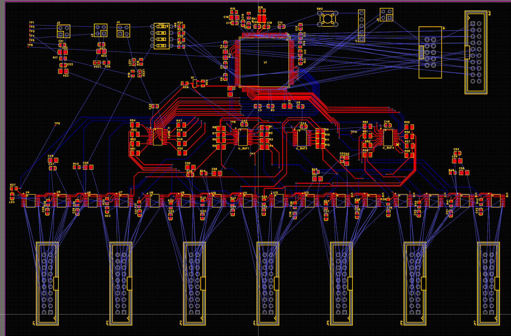
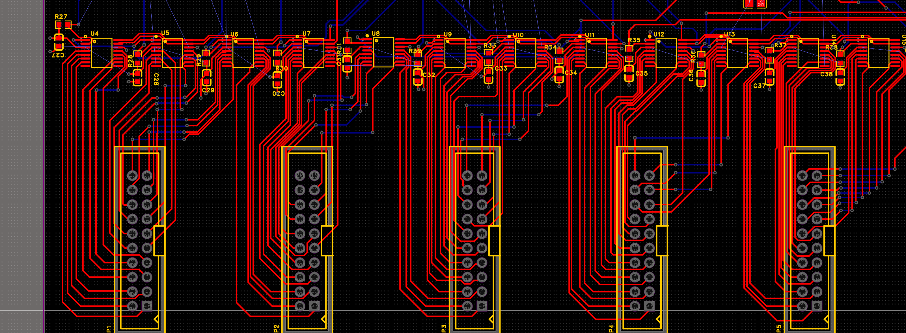
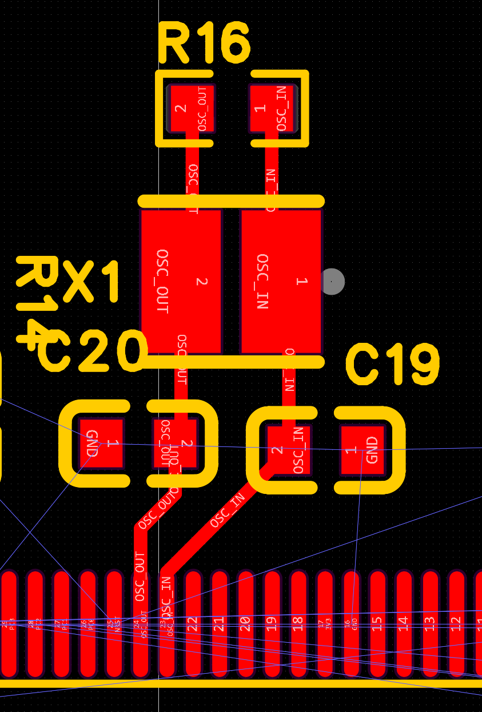

确定性时序
将16位帧、片选、锁存更新和通道寻址组织为可验证的硬件时序，减少CPU逐位翻转带来的抖动。
PROJECT OVERVIEW
项目将原有 NI/Simulink 数字输出链路迁移到独立嵌入式平台，以降低系统体积与成本，并获得可控的实时更新性能。
将16位帧、片选、锁存更新和通道寻址组织为可验证的硬件时序，减少CPU逐位翻转带来的抖动。
使用 SN74AHCT244 分组缓冲以及源端串联电阻，控制 SCLK、MOSI、CS 和 LDAC 的边沿与扇出负载。
四层板分别规划数字电源、DAC电源、5 V参考与连续地平面，并对每片DAC进行就近去耦。
PART I · FIRMWARE
已在 STM32F103 原型上完成 16位DAC帧、128通道寻址与逻辑分析仪验证。 当前原型采用 TIM2 触发 DMA，直接向 GPIO ODR 回放预计算波形，完整帧实测设计值约 43.4 Hz。
下一阶段迁移至 STM32F407，并通过更高总线带宽、并行分组发送与双缓冲策略， 推进至128通道 1 kHz级更新目标。
/* 128-channel deterministic waveform */
#define DAC_CHANNEL_COUNT 128U
#define DAC_BITS_PER_CHANNEL 16U
#define DAC_SAMPLES_PER_BIT 2U
static void DAC_BuildFastFrameWave(void)
{
for (channel = 0U;
channel < DAC_CHANNEL_COUNT;
channel++)
{
word = DAC_MakeFrameWord(channel);
for (bit = 0U;
bit < DAC_BITS_PER_CHANNEL;
bit++)
{
dma_wave_table[pos++] =
DAC_MakeOdrState(channel,
1U, mosi_high, 0U,
frame_mark_high);
}
}
}PART II · HARDWARE / PCB
STM32F407 + 4组逻辑缓冲 + 16片AD5328，按信号组进行扇出和布局，输出端按通道顺序映射至7个连接器。



DESIGN DECISIONS
VERIFICATION & ROADMAP
VERIFIED
完成16位帧、128通道寻址、FRAME_SYNC和逻辑分析仪解码验证。
COMPLETED
完成F407控制核心、缓冲器、16片DAC、电源与调试接口设计。
IN PROGRESS
正在完成模拟输出、数字总线、局部去耦以及四层电源/地规划。
NEXT
焊接调试后测量全通道刷新率、同步误差、噪声与输出稳定性。
PHASE II
通过多板同步与高速通信，将单板架构扩展至1000通道级系统。
EMBEDDED · PCB · REAL-TIME CONTROL